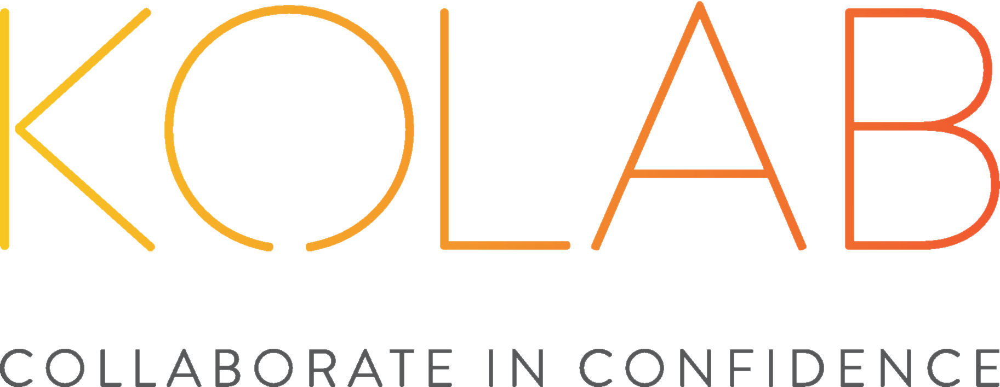
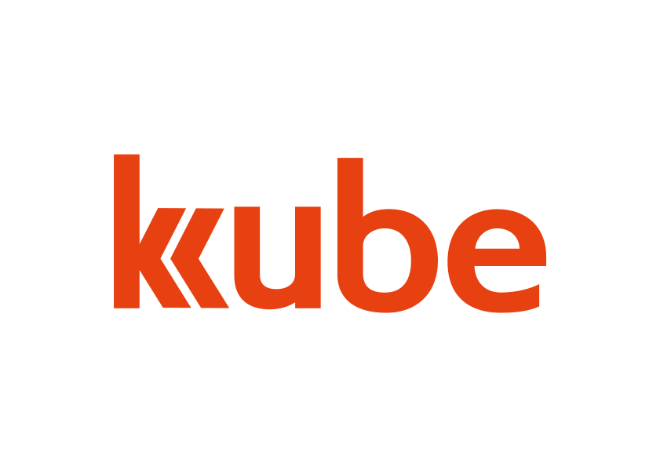

<!-- layout: true --> <!-- <div class="my-header"></div> --> <!-- <div class="my-footer"><span>© Kolab Systems.</span></div> --> --- class: center, middle <!-- <figure> --> <!--  --> <!-- <figcaption> Your text </figcaption> --> <!-- </figure> --> <!-- <div class="img-with-text"> --> <!-- --> <!-- <p>Some text</p> --> <!-- </div> --> <!-- <div class="item"> --> <!-- --> <!-- <span class="caption">Text below the image</span> --> <!-- </div> -->  A modern communication and collaboration client. <!-- .right[] --> ??? KDE Community Kolab Systems 5 years Responsible for Desktop client Kube latest effort --- # What is Kube? * A modern Communication and Collaboration client with offline capability * Everything that has to do with communication and collaboration: * Mail * Calendaring * Notes * IM * Todo’s * Built on top of a high performance core called Sink using QtQuick * Developed within the KDE community --- # Goals * Pretty AND useful * Maintainable codebase, can move fast without sacrificing quality * Deployable, cross-platform, including mobile * High performance, low resource consumption * Effortless security ??? KDE VDG Visual Design Group Michael, Sandro, Jens, Thomas --- # Current State * Building the Framework together with an MVP * Currently that’s a simple Email Client ??? * To dissapoint right away. * Encrypted mail --  ??? Most demanding usecase. --- class: middle, center # So how will we get there? ??? How will we get where we eventually want to go? Run over some key areas that we focus on * Go over some of the issues and explain how we tackle them: * Framework with composable components (for innovation) * Usability in the context of Security * Maintainability and Deployability (sinksh/config separation/dependencies) * User Story * Usability * Workflows * Network application (no local data), but offline storage. * Development & Maintenance * Composable components * Complexity * Performance * Deployment * Scriptability/Configuration --- layout: false .left-column[ ## User ] .right-column[ # Workflow * Traditionally we had different applications for different protocols * Support the user in what he actually has to do: * Organize a Meeting * Plan a Project * Catch up with communication ] ??? communication/calendaring: scheduling calendaring: event taskmanagement: agenda, actionable results notes: minutes --- layout: false .left-column[ ## User ] .right-column[ # Usability * Don’t do everything * Do what we do right * Effortless security: TOFU, Integrated key management, Simple visualisation. ] --- layout: false .left-column[ ## User ] .right-column[ # Networked application * ...with offline capability * Almost no local data except for configuration.red[*]. * Open protocols (IMAP/DAV*/...) .footnote[.red[*] unless you use a local backend] ] ??? Important for the multi-device workflow. Should this go somewhere else? --- layout: false .left-column[ ## User ## Development ] .right-column[ # Composable components * Building blocks to build new views * Self contained QML components using KPackage * Can be used outside of Kube as well ] ??? Clean separation of UI and rest through QML --- layout: false .left-column[ ## User ## Development ] .right-column[ # Complexity  ] ??? * Ruben goldberg machine. * Encapsulate mutable state. --- layout: false .left-column[ ## User ## Development ] .right-column[  ] ??? * libsink: Uniform domain specific interface --- class: center, middle  <!-- .right[] --> ??? * Uniform flow of information. * Reactive loop. --- layout: false .left-column[ ## User ## Development ] .right-column[ # Performance * Don't do unnecessary work (and only do it once). * Queriable data. * High performance key-value store.red[*]. * In process access to data. .footnote[.red[*] lmdb] ] ??? --- layout: false .left-column[ ## User ## Development ## Deployment ] .right-column[ # Deployment & Maintenance * Scriptability with sinksh * Setup/Modify/Remove accounts with scripts * Synchronize accounts * Query local data * sinksh scripts * REPL * Separation of configuration and data * Configurable logging ] --- # Now is the time to join! * Sink is an interesting modern C++ codebase. * If you like QML and know some C++ you can work on the UI. * We need help with cross-platform builds (Mac, Windows, Android, ...) * Weekly online meetings that are open to anyone. * For more info: kube.kde.org --- # Early tech preview * Fedora 25: ``` dnf copr enable kanarip/kube dnf install kube libotp ``` * Flatpak * From source --- class: middle, center # Questions?